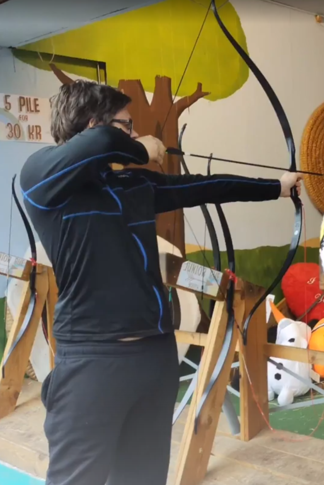
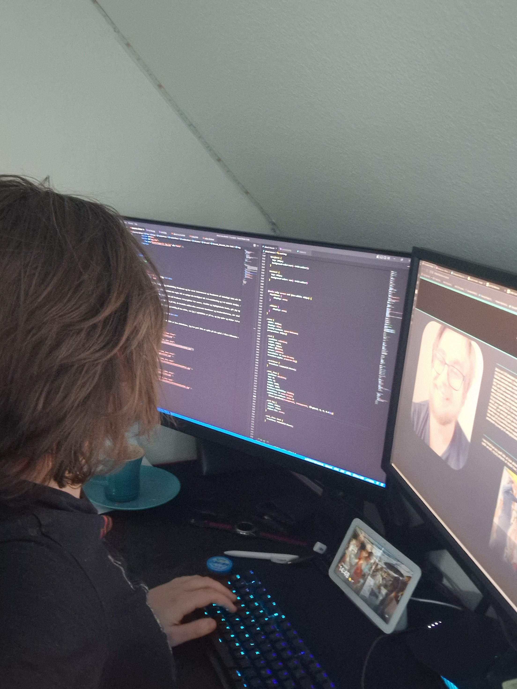
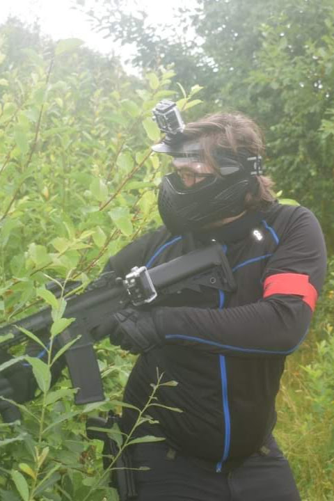

About me
I am a 3-D designer and Web development freelancer and have been interested and fascinated by technology my entire life ever since I started playing world of warcraft at a very young age I was interested in how the 3-D models and how the gamechanics worked I was fascinated by blizzards early cinematics and thought they were basically pure magic,
Thus started my journey into discovering my love for 3-D modelling and 3-D technical design when I finally graduated primary school I immediately went to an secondary school this secondary school had a field that majored 3-D design and techincal engineering, product design and IT, We were introduced to a small little programme named auto desk fusion 360 that came with a student licence and the cnc machines that could make any model we created into a working reality this is where space knife the prototyped knife blade handle was created and it started my long love and thus 6 years of experience in product 3-D.
While I did small freelancing 3-D projects for friends family and the occasional customer I went and worked in retail stores which gave me a better and bigger understanding of the inner workings of companies and the necessary requirements for leadership rolls, Later I decided that I wanted to advance my 3-D and learn programs such as 3-D S Max V ray and blender.
So I started at FGU, A bridge school between my current grades and the requirement grades, that would last for 6 months to just get the necessary grades to come in into the school I currently am in my new 3-D course. While I was partaking in the school I required some monetary income and decided to pick up a job however this job environment, while I last had 2 months, was incredibly toxic and wasn't a very nice place to work however it did teach me the values of energy conserving and sleep as I worked an almost 19 hour work day with half that being school and the other half being a night.
After that I finally went to the school that I currently am in now and I am enjoying and loving the 3-D development and the Web development that I am currently partaking in this entire website was created from the ground up with an ungodly amount of code, as im writing this i am reading those lines of code, for me this isnt work it's a passion and I'll bring that same positivity and energy to the workplace.
My hobbies
In my free time I like doing activities I like cycling my bike for several kilometres at the top speed I can do I like reading I enjoy Playing airsoft and I used to do archery and I'm seeking to get back into my old sport I play video games some notable titles like modern warfare 2 and overwatch


